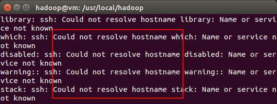

怎么使用IDEA与JAVA api连接虚拟机中的hbase
怎么使用IDEA与JAVA api连接虚拟机中的hbase配置 IDEA maven项目依赖复制 log4j.properties 配置文件设置hbase 可以通过ip 地址访问Hadoop3.1.3安装教程单机/伪分布式配置Hadoop3.1.3/Ubuntu18.04(16.04)环境创建hadoop用户更新apt安装SSH、配置SSH无密码登陆安装Java环境安装 Hadoop3.1.3Hadoop单机配置(非分布式)Hadoop伪分布式配置运行 Hadoop 伪分布式实例
首先根据这篇博客配置好hadoop与hbase ,确保hbase shell中的各条命令运行正常, 如果网页失效请看网页备份
博主的宿主机系统环境为Linux 5.10.0-5-amd64，使用Windows的同学请酌情参考
配置 IDEA maven项目依赖
然后在IDEA中新建maven项目，新建好后，设置jdk版本为1.8.0
然后在项目的maven的配置文件pom.xml中设置hadoop与hbase依赖:
org.apache.hadoop hadoop-authorg.apache.hbase hbase-clientorg.apache.hadoop hadoop-commonorg.apache.hadoop hadoop-clientorg.apache.hadoop hadoop-hdfs
注意设置hadoop与hbase的版本与虚拟机中设置的一致！！！
x <project xmlns="http://maven.apache.org/POM/4.0.0" xmlns:xsi="http://www.w3.org/2001/XMLSchema-instance" xsi:schemaLocation="http://maven.apache.org/POM/4.0.0 http://maven.apache.org/xsd/maven-4.0.0.xsd"> <modelVersion>4.0.0</modelVersion> <groupId>org.example</groupId> <artifactId>hbase_test</artifactId> <version>1.0-SNAPSHOT</version> <build><!-- <plugins>--><!-- <plugin>--><!-- <groupId>org.apache.maven.plugins</groupId>--><!-- <artifactId>maven-compiler-plugin</artifactId>--><!-- <configuration>--><!-- <source>15</source>--><!-- <target>15</target>--><!-- </configuration>--><!-- </plugin>--><!-- </plugins>--> </build> <properties> <maven.compiler.source>8</maven.compiler.source> <maven.compiler.target>8</maven.compiler.target> </properties> <dependencies> <dependency> <groupId>org.apache.hadoop</groupId> <artifactId>hadoop-auth</artifactId> <version>3.2.2</version> </dependency> <!-- https://mvnrepository.com/artifact/org.apache.hbase/hbase-client --> <dependency> <groupId>org.apache.hbase</groupId> <artifactId>hbase-client</artifactId> <version>2.3.4</version> </dependency> <!-- https://mvnrepository.com/artifact/org.apache.hadoop/hadoop-common --> <dependency> <groupId>org.apache.hadoop</groupId> <artifactId>hadoop-common</artifactId> <version>3.2.2</version> </dependency> <!-- https://mvnrepository.com/artifact/org.apache.hadoop/hadoop-client --> <dependency> <groupId>org.apache.hadoop</groupId> <artifactId>hadoop-client</artifactId> <version>3.2.2</version> </dependency> <!-- https://mvnrepository.com/artifact/org.apache.hadoop/hadoop-hdfs --> <dependency> <groupId>org.apache.hadoop</groupId> <artifactId>hadoop-hdfs</artifactId> <version>3.2.2</version> </dependency> </dependencies></project>然后等IDEA下载、安装好环境依赖
复制 log4j.properties 配置文件
将虚拟机中的hbase的配置文件log4j.properties复制到项目的main/resources文件夹下
例如:
设置hbase 可以通过ip 地址访问
按照论坛的提示, 编辑hbase配置文件hbase-site.xml, 添加
xxxxxxxxxx <property> <name>hbase.zookeeper.quorum</name> <value>192.168.122.147</value> </property>注意将192.168.122.147替换成可以通过宿主机访问虚拟机的ip地址
然后在项目代码中添加上述参数,如
xxxxxxxxxx/** * Created by Linziyu on 2020/02/01. * 1. 编程实现以下指定功能，并用Hadoop提供的HBase Shell命令完成相同任务： *（1） 列出HBase所有的表的相关信息，例如表名、创建时间等； *（2） 在终端打印出指定的表的所有记录数据； *（3） 向已经创建好的表添加和删除指定的列族或列； *（4） 清空指定的表的所有记录数据； *（5） 统计表的行数。 */import org.apache.hadoop.conf.Configuration;import org.apache.hadoop.hbase.*;import org.apache.hadoop.hbase.client.*;import org.apache.hadoop.hbase.util.Bytes;import java.io.IOException;public class QuestionTwo { public static Configuration configuration; public static Connection connection; public static Admin admin; public static void main(String[] args)throws IOException{ scanColumn("Student","S_Sex"); } //建立连接 public static void init(){ configuration = HBaseConfiguration.create(); configuration.set("hbase.zookeeper.quorum", "192.168.122.147"); try{ connection = ConnectionFactory.createConnection(configuration); admin = connection.getAdmin(); }catch (IOException e){ e.printStackTrace(); } } //关闭连接 public static void close(){ try{ if(admin != null){ admin.close(); } if(null != connection){ connection.close(); } }catch (IOException e){ e.printStackTrace(); } } /*createTable(String tableName, String[] fields) 创建表，参数tableName为表的名称，字符串数组fields为存储记录各个域名称的数组。 要求当HBase已经存在名为tableName的表的时候，先删除原有的表，然后再创建新的表。 */ public static void createTable(String tableName,String[] fields) throws IOException { init(); TableName tablename = TableName.valueOf(tableName); if(admin.tableExists(tablename)){ System.out.println("table is exists!"); admin.disableTable(tablename); admin.deleteTable(tablename);//删除原来的表 } TableDescriptorBuilder tableDescriptor = TableDescriptorBuilder.newBuilder(tablename); for(String str : fields){ tableDescriptor.setColumnFamily(ColumnFamilyDescriptorBuilder.newBuilder(Bytes.toBytes(str)).build()); admin.createTable(tableDescriptor.build()); } close(); } /*addRecord(String tableName, String row, String[] fields, String[] values) 向表tableName、行row（用S_Name表示）和字符串数组files指定的单元格中添加对应的数据values。 其中fields中每个元素如果对应的列族下还有相应的列限定符的话，用“columnFamily:column”表示。 例如，同时向“Math”、“Computer Science”、“English”三列添加成绩时，字符串数组 fields为{“Score:Math”,”Score:Computer Science”,”Score:English”}，数组values存储这三门课的成绩。 */ public static void addRecord(String tableName,String row,String[] fields,String[] values) throws IOException { init(); Table table = connection.getTable(TableName.valueOf(tableName)); for(int i = 0;i != fields.length;i++){ Put put = new Put(row.getBytes()); String[] cols = fields[i].split(":"); put.addColumn(cols[0].getBytes(), cols[1].getBytes(), values[i].getBytes()); table.put(put); } table.close(); close(); } /*（3）scanColumn(String tableName, String column) 浏览表tableName某一列的数据，如果某一行记录中该列数据不存在，则返回null。 要求当参数column为某一列族名称时，如果底下有若干个列限定符，则要列出每个列限定符代表的列的数据； 当参数column为某一列具体名称（例如“Score:Math”）时，只需要列出该列的数据。 */ public static void scanColumn(String tableName,String column)throws IOException{ init(); Table table = connection.getTable(TableName.valueOf(tableName)); Scan scan = new Scan(); scan.addFamily(Bytes.toBytes(column)); ResultScanner scanner = table.getScanner(scan); for (Result result = scanner.next(); result != null; result = scanner.next()){ showCell(result); } table.close(); close(); } //格式化输出 public static void showCell(Result result){ Cell[] cells = result.rawCells(); for(Cell cell:cells){ System.out.println("RowName:"+new String(Bytes.toString(cell.getRowArray(),cell.getRowOffset(), cell.getRowLength()))+" "); System.out.println("Timetamp:"+cell.getTimestamp()+" "); System.out.println("column Family:"+new String(Bytes.toString(cell.getFamilyArray(),cell.getFamilyOffset(), cell.getFamilyLength()))+" "); System.out.println("row Name:"+new String(Bytes.toString(cell.getQualifierArray(),cell.getQualifierOffset(), cell.getQualifierLength()))+" "); System.out.println("value:"+new String(Bytes.toString(cell.getValueArray(),cell.getValueOffset(), cell.getValueLength()))+" "); } } /*modifyData(String tableName, String row, String column) 修改表tableName，行row（可以用学生姓名S_Name表示），列column指定的单元格的数据。*/ public static void modifyData(String tableName,String row,String column,String val)throws IOException{ init(); Table table = connection.getTable(TableName.valueOf(tableName)); Put put = new Put(row.getBytes()); put.addColumn(column.getBytes(),null,val.getBytes()); table.put(put); table.close(); close(); } /*（5）deleteRow(String tableName, String row) 删除表tableName中row指定的行的记录。*/ public static void deleteRow(String tableName,String row)throws IOException{ init(); Table table = connection.getTable(TableName.valueOf(tableName)); Delete delete = new Delete(row.getBytes()); table.delete(delete); table.close(); close(); }}运行截图
网页备份
Hadoop3.1.3安装教程单机/伪分布式配置Hadoop3.1.3/Ubuntu18.04(16.04)
林子雨老师 2020年1月19日
(updated: 2020年7月15日)
点击这里观看厦门大学林子雨老师主讲《大数据技术原理与应用》授课视频 【相关文章推荐】《大数据软件安装和基础编程实践指南》，详细指导VirtualBox、Ubuntu、Hadoop、HDFS、HBase、Hive、MapReduce、Spark、Flink的安装和基础编程 当开始着手实践 Hadoop 时，安装 Hadoop 往往会成为新手的一道门槛。尽管安装其实很简单，书上有写到，官方网站也有 Hadoop 安装配置教程，但由于对 Linux 环境不熟悉，书上跟官网上简略的安装步骤新手往往 Hold 不住。加上网上不少教程也甚是坑，导致新手折腾老几天愣是没装好，很是打击学习热情。
本教程由厦门大学数据库实验室 / 林子雨出品，转载请注明。本教程适合于原生 Hadoop3.1.3，主要参考了官方安装教程，步骤详细，辅以适当说明，相信按照步骤来，都能顺利安装并运行Hadoop。另外有Hadoop安装配置简略版方便有基础的读者快速完成安装。此外，希望读者们能多去了解一些 Linux 的知识，以后出现问题时才能自行解决。
为了方便学习本教程，请读者们利用Linux系统中自带的firefox浏览器打开本指南进行学习。 Hadoop安装文件，可以到Hadoop官网下载hadoop-3.1.3.tar.gz。 也可以直接点击这里从百度云盘下载软件（提取码：lnwl），进入百度网盘后，进入“软件”目录，找到hadoop-3.1.3.tar.gz文件下载到本地。
环境
本教程使用 Ubuntu 18.04 64位 作为系统环境（或者Ubuntu 14.04，Ubuntu16.04 也行，32位、64位均可），请自行安装系统（可参考使用VirtualBox安装Ubuntu）。
装好了 Ubuntu 系统之后，在安装 Hadoop 前还需要做一些必备工作。
创建hadoop用户
如果你安装 Ubuntu 的时候不是用的 “hadoop” 用户，那么需要增加一个名为 hadoop 的用户。
首先按 ctrl+alt+t 打开终端窗口，输入如下命令创建新用户 :
xxxxxxxxxxsudo useradd -m hadoop -s /bin/bashShell 命令
这条命令创建了可以登陆的 hadoop 用户，并使用 /bin/bash 作为 shell。
sudo命令
本文中会大量使用到sudo命令。sudo是ubuntu中一种权限管理机制，管理员可以授权给一些普通用户去执行一些需要root权限执行的操作。当使用sudo命令时，就需要输入您当前用户的密码.
密码
在Linux的终端中输入密码，终端是不会显示任何你当前输入的密码，也不会提示你已经输入了多少字符密码。而在windows系统中,输入密码一般都会以“*”表示你输入的密码字符
输入法中英文切换
ubuntu中终端输入的命令一般都是使用英文输入。linux中英文的切换方式是使用键盘“shift”键来切换，也可以点击顶部菜单的输入法按钮进行切换。ubuntu自带的Sunpinyin中文输入法已经足够读者使用。
Ubuntu终端复制粘贴快捷键
在Ubuntu终端窗口中，复制粘贴的快捷键需要加上 shift，即粘贴是 ctrl+shift+v。
接着使用如下命令设置密码，可简单设置为 hadoop，按提示输入两次密码：
xxxxxxxxxxsudo passwd hadoopShell 命令
可为 hadoop 用户增加管理员权限，方便部署，避免一些对新手来说比较棘手的权限问题：
xxxxxxxxxxsudo adduser hadoop sudoShell 命令
最后注销当前用户（点击屏幕右上角的齿轮，选择注销），返回登陆界面。在登陆界面中选择刚创建的 hadoop 用户进行登陆。
更新apt
用 hadoop 用户登录后，我们先更新一下 apt，后续我们使用 apt 安装软件，如果没更新可能有一些软件安装不了。按 ctrl+alt+t打开终端窗口，执行如下命令：
xxxxxxxxxxsudo apt-get updateShell 命令
若出现如下 “Hash校验和不符” 的提示，可通过更改软件源来解决。若没有该问题，则不需要更改。从软件源下载某些软件的过程中，可能由于网络方面的原因出现没法下载的情况，那么建议更改软件源。在学习Hadoop过程中，即使出现“Hash校验和不符”的提示，也不会影响Hadoop的安装。
Ubuntu更新软件源时遇到Hash校验和不符的问题
点击查看：如何更改软件源
后续需要更改一些配置文件，我比较喜欢用的是 vim（vi增强版，基本用法相同），建议安装一下（如果你实在还不会用 vi/vim 的，请将后面用到 vim 的地方改为 gedit，这样可以使用文本编辑器进行修改，并且每次文件更改完成后请关闭整个 gedit 程序，否则会占用终端）：
xxxxxxxxxxsudo apt-get install vimShell 命令
安装软件时若需要确认，在提示处输入 y 即可。
通过命令行安装软件
点击查看：vim简单操作指南
安装SSH、配置SSH无密码登陆
集群、单节点模式都需要用到 SSH 登陆（类似于远程登陆，你可以登录某台 Linux 主机，并且在上面运行命令），Ubuntu 默认已安装了 SSH client，此外还需要安装 SSH server：
xxxxxxxxxxsudo apt-get install openssh-serverShell 命令
安装后，可以使用如下命令登陆本机：
xxxxxxxxxxssh localhostShell 命令
此时会有如下提示(SSH首次登陆提示)，输入 yes 。然后按提示输入密码 hadoop，这样就登陆到本机了。
SSH首次登陆提示
但这样登陆是需要每次输入密码的，我们需要配置成SSH无密码登陆比较方便。
首先退出刚才的 ssh，就回到了我们原先的终端窗口，然后利用 ssh-keygen 生成密钥，并将密钥加入到授权中：
xxxxxxxxxxexit # 退出刚才的 ssh localhostcd ~/.ssh/ # 若没有该目录，请先执行一次ssh localhostssh-keygen -t rsa # 会有提示，都按回车就可以cat ./id_rsa.pub >> ./authorized_keys # 加入授权Shell 命令
~的含义
在 Linux 系统中，~ 代表的是用户的主文件夹，即 “/home/用户名” 这个目录，如你的用户名为 hadoop，则 ~ 就代表 “/home/hadoop/”。 此外，命令中的 # 后面的文字是注释，只需要输入前面命令即可。
此时再用 ssh localhost 命令，无需输入密码就可以直接登陆了，如下图所示。
SSH无密码登录
安装Java环境
手动安装，推荐采用本方式
Hadoop3.1.3需要JDK版本在1.8及以上。需要按照下面步骤来自己手动安装JDK1.8。
我们已经把JDK1.8的安装包jdk-8u162-linux-x64.tar.gz放在了百度云盘，可以点击这里到百度云盘下载JDK1.8安装包（提取码：lnwl）。请把压缩格式的文件dk-8u162-linux-x64.tar.gz下载到本地电脑，假设保存在“/home/linziyu/Downloads/”目录下。
在Linux命令行界面中，执行如下Shell命令（注意：当前登录用户名是hadoop）：
xxxxxxxxxxcd /usr/libsudo mkdir jvm #创建/usr/lib/jvm目录用来存放JDK文件cd ~ #进入hadoop用户的主目录cd Downloads #注意区分大小写字母，刚才已经通过FTP软件把JDK安装包jdk-8u162-linux-x64.tar.gz上传到该目录下sudo tar -zxvf ./jdk-8u162-linux-x64.tar.gz -C /usr/lib/jvm #把JDK文件解压到/usr/lib/jvm目录下Shell 命令
上面使用了解压缩命令tar，如果对Linux命令不熟悉，可以参考常用的Linux命令用法。
JDK文件解压缩以后，可以执行如下命令到/usr/lib/jvm目录查看一下：
xxxxxxxxxxcd /usr/lib/jvmsShell 命令
可以看到，在/usr/lib/jvm目录下有个jdk1.8.0_162目录。
下面继续执行如下命令，设置环境变量：
xxxxxxxxxxcd ~vim ~/.bashrcShell 命令
上面命令使用vim编辑器（查看vim编辑器使用方法）打开了hadoop这个用户的环境变量配置文件，请在这个文件的开头位置，添加如下几行内容：
xxxxxxxxxxexport JAVA_HOME=/usr/lib/jvm/jdk1.8.0_162export JRE_HOME=${JAVA_HOME}/jreexport CLASSPATH=.:${JAVA_HOME}/lib:${JRE_HOME}/libexport PATH=${JAVA_HOME}/bin:$PATH
保存.bashrc文件并退出vim编辑器。然后，继续执行如下命令让.bashrc文件的配置立即生效：
xxxxxxxxxxsource ~/.bashrcShell 命令
这时，可以使用如下命令查看是否安装成功：
xxxxxxxxxxjava -versionShell 命令
如果能够在屏幕上返回如下信息，则说明安装成功：
xxxxxxxxxxhadoop@ubuntu:~$ java -versionjava version "1.8.0_162"Java(TM) SE Runtime Environment (build 1.8.0_162-b12)Java HotSpot(TM) 64-Bit Server VM (build 25.162-b12, mixed mode)
至此，就成功安装了Java环境。下面就可以进入Hadoop的安装。
安装 Hadoop3.1.3
Hadoop安装文件，可以到Hadoop官网下载hadoop-3.1.3.tar.gz。
也可以直接点击这里从百度云盘下载软件（提取码：lnwl），进入百度网盘后，进入“软件”目录，找到hadoop-3.1.3.tar.gz文件，下载到本地。
我们选择将 Hadoop 安装至 /usr/local/ 中：
xxxxxxxxxxsudo tar -zxf ~/下载/hadoop-3.1.3.tar.gz -C /usr/local # 解压到/usr/local中cd /usr/local/sudo mv ./hadoop-3.1.3/ ./hadoop # 将文件夹名改为hadoopsudo chown -R hadoop ./hadoop # 修改文件权限Shell 命令
Hadoop 解压后即可使用。输入如下命令来检查 Hadoop 是否可用，成功则会显示Hadoop版本信息：
xxxxxxxxxxcd /usr/local/hadoop./bin/hadoop versionShell 命令
相对路径与绝对路径
请务必注意命令中的相对路径与绝对路径，本文后续出现的 ./bin/...，./etc/... 等包含 ./ 的路径，均为相对路径，以/usr/local/hadoop 为当前目录。例如在 /usr/local/hadoop 目录中执行 ./bin/hadoop version 等同于执行 /usr/local/hadoop/bin/hadoop version。可以将相对路径改成绝对路径来执行，但如果你是在主文件夹 ~ 中执行 ./bin/hadoop version，执行的会是 /home/hadoop/bin/hadoop version，就不是我们所想要的了。
Hadoop单机配置(非分布式)
Hadoop 默认模式为非分布式模式（本地模式），无需进行其他配置即可运行。非分布式即单 Java 进程，方便进行调试。
现在我们可以执行例子来感受下Hadoop 的运行。Hadoop 附带了丰富的例子（运行 ./bin/hadoop jar ./share/hadoop/mapreduce/hadoop-mapreduce-examples-3.1.3.jar 可以看到所有例子），包括 wordcount、terasort、join、grep 等。
在此我们选择运行 grep 例子，我们将 input 文件夹中的所有文件作为输入，筛选当中符合正则表达式 dfs[a-z.]+ 的单词并统计出现的次数，最后输出结果到 output 文件夹中。
xxxxxxxxxxcd /usr/local/hadoopmkdir ./inputcp ./etc/hadoop/*.xml ./input # 将配置文件作为输入文件./bin/hadoop jar ./share/hadoop/mapreduce/hadoop-mapreduce-examples-3.1.3.jar grep ./input ./output 'dfs[a-z.]+'cat ./output/* # 查看运行结果Shell 命令
执行成功后如下所示，输出了作业的相关信息，输出的结果是符合正则的单词 dfsadmin 出现了1次

Hadoop单机模式运行grep的输出结果
注意，Hadoop 默认不会覆盖结果文件，因此再次运行上面实例会提示出错，需要先将 ./output 删除。
xxxxxxxxxxrm -r ./outputShell 命令
Hadoop伪分布式配置
Hadoop 可以在单节点上以伪分布式的方式运行，Hadoop 进程以分离的 Java 进程来运行，节点既作为 NameNode 也作为 DataNode，同时，读取的是 HDFS 中的文件。
Hadoop 的配置文件位于 /usr/local/hadoop/etc/hadoop/ 中，伪分布式需要修改2个配置文件 core-site.xml 和 hdfs-site.xml 。Hadoop的配置文件是 xml 格式，每个配置以声明 property 的 name 和 value 的方式来实现。
修改配置文件 core-site.xml (通过 gedit 编辑会比较方便: gedit ./etc/hadoop/core-site.xml)，将当中的
xxxxxxxxxx<configuration></configuration>XML
修改为下面配置：
xxxxxxxxxx<configuration> <property> <name>hadoop.tmp.dir</name> <value>file:/usr/local/hadoop/tmp</value> <description>Abase for other temporary directories.</description> </property> <property> <name>fs.defaultFS</name> <value>hdfs://localhost:9000</value> </property></configuration>XML
同样的，修改配置文件 hdfs-site.xml：
xxxxxxxxxx<configuration> <property> <name>dfs.replication</name> <value>1</value> </property> <property> <name>dfs.namenode.name.dir</name> <value>file:/usr/local/hadoop/tmp/dfs/name</value> </property> <property> <name>dfs.datanode.data.dir</name> <value>file:/usr/local/hadoop/tmp/dfs/data</value> </property></configuration>XML
Hadoop配置文件说明
Hadoop 的运行方式是由配置文件决定的（运行 Hadoop 时会读取配置文件），因此如果需要从伪分布式模式切换回非分布式模式，需要删除 core-site.xml 中的配置项。
此外，伪分布式虽然只需要配置 fs.defaultFS 和 dfs.replication 就可以运行（官方教程如此），不过若没有配置 hadoop.tmp.dir 参数，则默认使用的临时目录为 /tmp/hadoo-hadoop，而这个目录在重启时有可能被系统清理掉，导致必须重新执行 format 才行。所以我们进行了设置，同时也指定 dfs.namenode.name.dir 和 dfs.datanode.data.dir，否则在接下来的步骤中可能会出错。
配置完成后，执行 NameNode 的格式化:
xxxxxxxxxxcd /usr/local/hadoop./bin/hdfs namenode -formatShell 命令
成功的话，会看到 “successfully formatted” 的提示，具体返回信息类似如下：
xxxxxxxxxx2020-01-08 15:31:31,560 INFO namenode.NameNode: STARTUP_MSG:/************************************************************STARTUP_MSG: Starting NameNodeSTARTUP_MSG: host = hadoop/127.0.1.1STARTUP_MSG: args = [-format]STARTUP_MSG: version = 3.1.3*************************************************************/......2020-01-08 15:31:35,677 INFO common.Storage: Storage directory /usr/local/hadoop/tmp/dfs/name **has been successfully formatted**.2020-01-08 15:31:35,700 INFO namenode.FSImageFormatProtobuf: Saving image file /usr/local/hadoop/tmp/dfs/name/current/fsimage.ckpt_0000000000000000000 using no compression2020-01-08 15:31:35,770 INFO namenode.FSImageFormatProtobuf: Image file /usr/local/hadoop/tmp/dfs/name/current/fsimage.ckpt_0000000000000000000 of size 393 bytes saved in 0 seconds .2020-01-08 15:31:35,810 INFO namenode.NNStorageRetentionManager: Going to retain 1 images with txid >= 02020-01-08 15:31:35,816 INFO namenode.FSImage: FSImageSaver clean checkpoint: txid = 0 when meet shutdown.2020-01-08 15:31:35,816 INFO namenode.NameNode: SHUTDOWN_MSG:/************************************************************SHUTDOWN_MSG: Shutting down NameNode at hadoop/127.0.1.1*************************************************************/
如果在这一步时提示 Error: JAVA_HOME is not set and could not be found. 的错误，则说明之前设置 JAVA_HOME 环境变量那边就没设置好，请按教程先设置好 JAVA_HOME 变量，否则后面的过程都是进行不下去的。如果已经按照前面教程在.bashrc文件中设置了JAVA_HOME，还是出现 Error: JAVA_HOME is not set and could not be found. 的错误，那么，请到hadoop的安装目录修改配置文件“/usr/local/hadoop/etc/hadoop/hadoop-env.sh”，在里面找到“export JAVA_HOME=${JAVA_HOME}”这行，然后，把它修改成JAVA安装路径的具体地址，比如，“export JAVA_HOME=/usr/lib/jvm/default-java”，然后，再次启动Hadoop。
接着开启 NameNode 和 DataNode 守护进程。
xxxxxxxxxxcd /usr/local/hadoop./sbin/start-dfs.sh #start-dfs.sh是个完整的可执行文件，中间没有空格Shell 命令
若出现如下SSH提示，输入yes即可。
 启动
启动 Hadoop 时的SSH提示
启动时可能会出现如下 WARN 提示：WARN util.NativeCodeLoader: Unable to load native-hadoop library for your platform… using builtin-java classes where applicable WARN 提示可以忽略，并不会影响正常使用。
*启动 Hadoop 时提示 Could not resolve hostname*
如果启动 Hadoop 时遇到输出非常多“sh: Could not resolve hostname xxx”的异常情况，如下图所示：
启动 Hadoop时的异常提示
这个并不是 ssh 的问题，可通过设置 Hadoop 环境变量来解决。首先按键盘的 ctrl + c 中断启动，然后在 ~/.bashrc 中，增加如下两行内容（设置过程与 JAVA_HOME 变量一样，其中 HADOOP_HOME 为 Hadoop 的安装目录）：
xxxxxxxxxxexport HADOOP_HOME=/usr/local/hadoopexport HADOOP_COMMON_LIB_NATIVE_DIR=$HADOOP_HOME/lib/nativeShell
保存后，务必执行 source ~/.bashrc 使变量设置生效，然后再次执行 ./sbin/start-dfs.sh 启动 Hadoop。
启动完成后，可以通过命令 jps 来判断是否成功启动，若成功启动则会列出如下进程: “NameNode”、”DataNode” 和 “SecondaryNameNode”（如果 SecondaryNameNode 没有启动，请运行 sbin/stop-dfs.sh 关闭进程，然后再次尝试启动尝试）。如果没有 NameNode 或 DataNode ，那就是配置不成功，请仔细检查之前步骤，或通过查看启动日志排查原因。
 通过
通过 jps 查看启动的Hadoop 进程
Hadoop无法正常启动的解决方法
一般可以查看启动日志来排查原因，注意几点：
- 启动时会提示形如 “
DBLab-XMU: starting namenode, logging to /usr/local/hadoop/logs/hadoop-hadoop-namenode-DBLab-XMU.out”，其中DBLab-XMU对应你的机器名，但其实启动日志信息是记录在/usr/local/hadoop/logs/hadoop-hadoop-namenode-DBLab-XMU.log中，所以应该查看这个后缀为 .log 的文件； - 每一次的启动日志都是追加在日志文件之后，所以得拉到最后面看，对比下记录的时间就知道了。
- 一般出错的提示在最后面，通常是写着 Fatal、Error、Warning 或者 Java Exception 的地方。
- 可以在网上搜索一下出错信息，看能否找到一些相关的解决方法。
此外，若是 DataNode 没有启动，可尝试如下的方法（注意这会删除 HDFS 中原有的所有数据，如果原有的数据很重要请不要这样做）：
xxxxxxxxxx# 针对 DataNode 没法启动的解决方法cd /usr/local/hadoop./sbin/stop-dfs.sh # 关闭rm -r ./tmp # 删除 tmp 文件，注意这会删除 HDFS 中原有的所有数据./bin/hdfs namenode -format # 重新格式化 NameNode./sbin/start-dfs.sh # 重启Shell 命令
成功启动后，可以访问 Web 界面 http://localhost:9870 查看 NameNode 和 Datanode 信息，还可以在线查看 HDFS 中的文件。
运行 Hadoop 伪分布式实例
上面的单机模式，grep 例子读取的是本地数据，伪分布式读取的则是 HDFS 上的数据。要使用 HDFS，首先需要在 HDFS 中创建用户目录：
xxxxxxxxxx./bin/hdfs dfs -mkdir -p /user/hadoopShell 命令
注意
教材《大数据技术原理与应用》的命令是以"./bin/hadoop dfs"开头的Shell命令方式，实际上有三种shell命令方式。
\1. hadoop fs
\2. hadoop dfs
\3. hdfs dfs
hadoop fs适用于任何不同的文件系统，比如本地文件系统和 HDFS 文件系统
hadoop dfs只能适用于 HDFS 文件系统
hdfs dfs 跟 hadoop dfs 的命令作用一样，也只能适用于 HDFS 文件系统
接着将 ./etc/hadoop 中的xml 文件作为输入文件复制到分布式文件系统中，即将 /usr/local/hadoop/etc/hadoop 复制到分布式文件系统中的 /user/hadoop/input 中。我们使用的是 hadoop 用户，并且已创建相应的用户目录 /user/hadoop ，因此在命令中就可以使用相对路径如 input，其对应的绝对路径就是 user/hadoop/input:
xxxxxxxxxx./bin/hdfs dfs -mkdir input./bin/hdfs dfs -put ./etc/hadoop/*.xml inputShell 命令
复制完成后，可以通过如下命令查看文件列表：
xxxxxxxxxx./bin/hdfs dfs -ls inputShell 命令
伪分布式运行 MapReduce 作业的方式跟单机模式相同，区别在于伪分布式读取的是HDFS中的文件（可以将单机步骤中创建的本地 input 文件夹，输出结果 output 文件夹都删掉来验证这一点）。
xxxxxxxxxx./bin/hadoop jar ./share/hadoop/mapreduce/hadoop-mapreduce-examples-3.1.3.jar grep input output 'dfs[a-z.]+'Shell 命令
查看运行结果的命令（查看的是位于 HDFS 中的输出结果）：
xxxxxxxxxx./bin/hdfs dfs -cat output/*Shell 命令
结果如下，注意到刚才我们已经更改了配置文件，所以运行结果不同。

Hadoop伪分布式运行grep 结果
我们也可以将运行结果取回到本地：
xxxxxxxxxxrm -r ./output # 先删除本地的 output 文件夹（如果存在）./bin/hdfs dfs -get output ./output # 将 HDFS 上的 output 文件夹拷贝到本机cat ./output/*Shell 命令
Hadoop 运行程序时，输出目录不能存在，否则会提示错误 “org.apache.hadoop.mapred.FileAlreadyExistsException: Output directory ``hdfs://localhost:9000/user/hadoop/output already exists” ，因此若要再次执行，需要执行如下命令删除 output 文件夹:
xxxxxxxxxx./bin/hdfs dfs -rm -r output # 删除 output 文件夹Shell 命令
运行程序时，输出目录不能存在
运行 Hadoop 程序时，为了防止覆盖结果，程序指定的输出目录（如 output）不能存在，否则会提示错误，因此运行前需要先删除输出目录。在实际开发应用程序时，可考虑在程序中加上如下代码，能在每次运行时自动删除输出目录，避免繁琐的命令行操作：
xxxxxxxxxxConfiguration conf = new Configuration();Job job = new Job(conf); /* 删除输出目录 */Path outputPath = new Path(args[1]);outputPath.getFileSystem(conf).delete(outputPath, true);Java
若要关闭 Hadoop，则运行
xxxxxxxxxx./sbin/stop-dfs.shShell 命令
注意
下次启动hadoop 时，无需进行 NameNode 的初始化，只需要运行 ./sbin/start-dfs.sh 就可以！
written by stceum on 2021-04-04 16:18:40